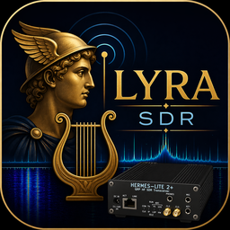
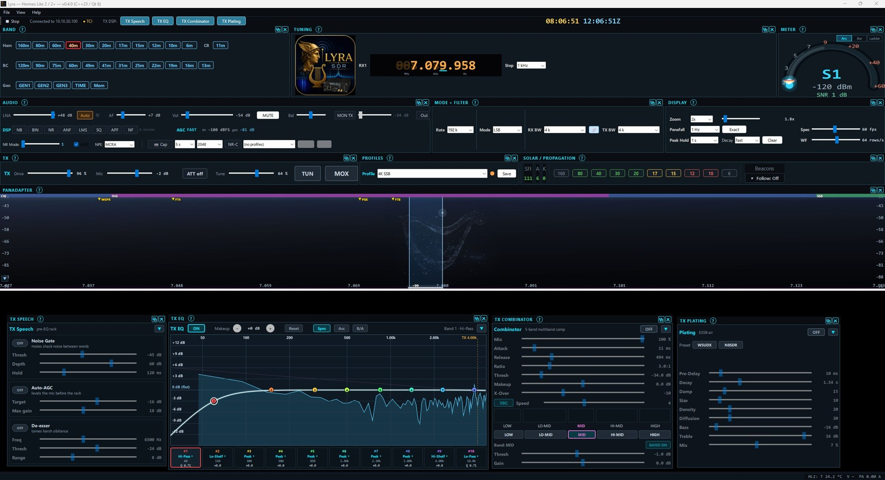
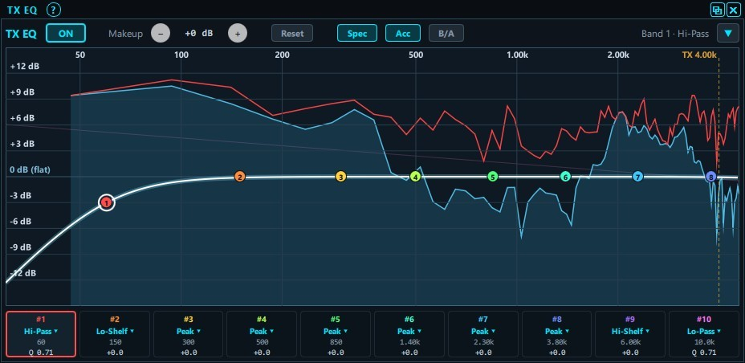
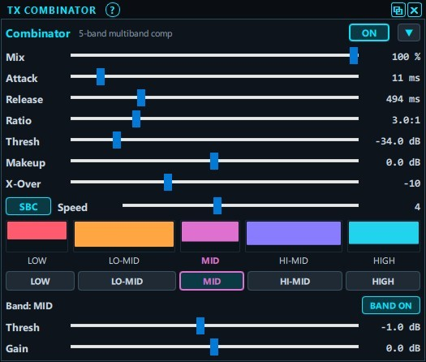
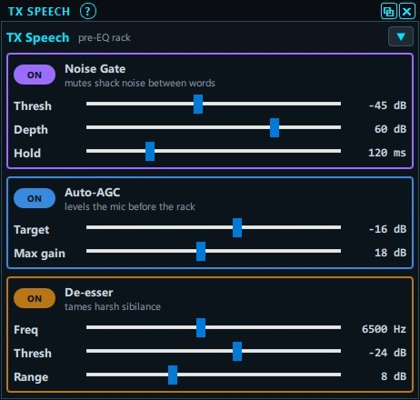

A modern, GPU-accelerated SDR transceiver for the Hermes Lite 2 / 2+.
Windows 10 / 11 · Hermes Lite 2 / 2+ · 1600 × 900 display or larger

Shot on a 2560 × 1440 display with every panel open — you'll want a big
screen for a layout like this one.
Lyra needs 1600 × 900 to run, which fits the panels you operate with
(panadapter + waterfall, tuning, band, filters, audio, meter, TX);
1920 × 1080 holds everything at once.
Full PC requirements →
Shape your audio like a broadcast desk — every stage native, saved as recallable profiles.



Receive and transmit SSB, CW, AM / SAM and FM on the Hermes Lite 2 / 2+ — a complete, native HPSDR console with a real TX chain, not just a receiver.
A Vulkan-accelerated spectrum and waterfall with click-to-tune, centre-tune (CTUN), RIT / XIT, peak hold and eight colour palettes.
8-band parametric EQ, a multiband combinator, tube-plate reverb, speech processing, a voice keyer and VOX — shape your audio like a broadcast desk, saved as recallable profiles.
WDSP noise reduction, noise blanker, auto-notch and LMS, plus a captured-noise profile that samples your own band noise and subtracts it.
An on-screen CW decoder (fldigi engine), click-to-send macros, an internal / Winkeyer keyer, and a callsign ID rendered right into your waterfall.
DX cluster / RBN spots overlaid on the panadapter for click-to-tune, an EiBi shortwave-broadcaster overlay, plus live solar and propagation panels.
Lightning and severe-storm alerts from the NWS, plus live wind and conditions from your own Ambient or Ecowitt station — so you know when to pull the antenna before the storm rolls in.
A two-way link with SDRLogger+ over TCI — frequency, mode and DX spots stay in sync, and CW contacts log straight from Lyra's console with call and RST.
A TCI server, Kenwood CAT over COM or TCP, per-band tuner memory, external filter / open-collector band control, digital-mode audio (VAC), and companion-app launch.
Where Lyra is headed — planned for future releases.
Support for the ANAN family (HPSDR Protocol 2) and the Brick SDR, so Lyra drives more than just the Hermes Lite.
A PureSignal-style adaptive predistortion loop for a cleaner, more linear transmit signal and lower splatter.
Native cross-platform builds so Lyra runs beyond Windows.
SDRLogger+ is Lyra's sister application — a modern contest & DX logger by the same developer. Link the two over TCI and switch on Combo: copy a call once in Lyra's CW console and it lands in the log with a callbook lookup, the operator's name returns to your macros, RST auto-fills from Lyra's calibrated S-meter, and one macro logs the QSO as you send 73.
Rick Langford (N8SDR) — lead developer, creator of Lyra.
Brent Crier (N9BC) — co-contributor.
Ports the WDSP DSP engine by Warren Pratt (NR0V) and the fldigi CW decoder by Dave Freese (W1HKJ) and VE7IT — both GPL. Lyra is GPL v3 licensed.